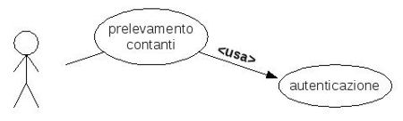
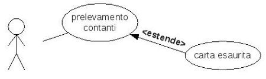

Torna alla pagina di Ingegneria Del Software
:: Ingegneria del software - Appunti del 10 marzo ::
Requisiti formali e semi-formali
Questi benedetti requisiti, che nella lezione scorsa ci siamo dati tanta pena di raccogliere ed analizzare, dovranno trovare una loro forma per poter essere sfruttati.
Possiamo distinguere tra requisiti messi giù in modo formale e quelli messi in modo semi-formale. La parola formale è affascinante e prelude a meravigliose matematiche proprietà, ma la vedremo più tardi. In ogni caso una volta terminata la loro stesura è possibile effettuarne un conteggio, o ancora meglio, una valutazione metrica delle varie tipologie; in questo modo sarà possibile fare previsioni di tempi e di costi.
I casi d'uso che vedremo ora sono un buon passaggio rispetto ai meri requisiti semi-formali, perché sono visuali e diagrammatici e quindi potenzialmente più semplici da comprendere. Hanno però qualche limite, ad esempio l'impossibilità di rappresentare requisiti non funzionali oppure indicazioni temporali.
Per la scrittura dei requisiti, non esiste uno standard industriale. Il control english, il MoSCoW (must-should-could-would, di cui noi vediamo l'estratto must-should-may) e il grafo delle dipendenze sono good practices, ma non hanno uno standard. Invece, per i casi d'uso l'OMG (Object Management Group, l'associazione che sta dietro a UML e a CORBA) ha prodotto uno standard.
I casi d'uso
I casi d'uso sono un'interazione tra attore esterno ai confini del sistema e il sistema stesso. Dato che l'attore interagisce con il sistema per ottenere un certo scopo, essi riguardano solo i requisiti funzionali. Una forma testuale di un caso d'uso potrebbe essere: la segretaria stampa la fattura.
Gli attori
L'attore, appena introdotto, non è semplicemente uno stakeholder. In realtà, un attore è un sottoinsieme degli stakeholder, in particolare quelli che interagiscono con il sistema (vedi le categorie di Sommerville); può quindi essere un utente, una classe di utenti, un ruolo o anche un altro sistema: ciò che lo contraddistingue è che deve interagire con il nostro sistema, ed è esterno ad esso.
L'attore si rappresenta con un simpatico omino: 
L'attore primario è un attore che ha uno scopo preciso, il quale richiede l'assistenza del sistema. Nel caso di un Bancomat gli attori primarî possono essere l'utente o il cassiere che lo deve riempire.
L'attore secondario è invece un attore di cui è il sistema stesso a richiedere l'intervento. Sempre nel caso del Bancomat, l'addetto all'assistenza è un attore secondario.
A noi quindi interessa sapere chi vuole fare cosa e perché, ma non come è fatto dentro il sistema.
Requisiti funzionali e casi d'uso
Non c'è sempre una corrispondenza 1:1 tra requisiti funzionali e casi d'uso. Prendiamo il caso d'uso di una segretaria che deve stampare la fattura. Esso consiste in diverse azioni, ad esempio compilarla, salvarla e poi stamparla. Queste sono rappresentate da diversi requisiti, ma hanno 1 solo scopo, e quindi un solo caso d'uso.
Nei requisiti non funzionali non si parla mai degli eventi eccezionali, e qui bisogna stare attenti: sono i comportamenti imprevisti che fanno litigare il committente con il produttore...
Una cosa che invece i casi d'uso e i requisiti hanno in comune è il glossario, ovvero l'indice dei termini utilizzati con tanto di spiegazione. I termini devono essere uguali.
Se all'esame il prof ci dà un glossario, noi dobbiamo usare quello e non inventarci nuove parole!
Insiemi di casi d'uso
Un insieme di CdU è completo se specifica tutte le possibili interazioni del sistema. In pratica, definendo chi è dentro e chi è fuori dal sistema, definisce anche i confini del sistema stesso. Questa faccenda dei confini è importante anche dal punto di vista del contratto tra cliente e fornitore, perché serve per dire chiaramente che cosa uno deve sviluppare e che cosa invece no.
Schemi di casi d'uso
I casi d'uso hanno questa forma:
Le attività descritte nel diagramma (quelle definite nelle ellissi) possono spesso essere scomposte in sottooperazioni fino a quando non arrivo a quelle elementari, ovvero non ulteriormente scomponibili. Facciamo un esempio semplicistico tanto per dare un'idea (siamo sempre nel sistema bancomat):
Il caso d'uso è generalmente corredato di uno schema, nel quale tra le altre cose vanno riportati:
- le relazioni, ovvero dipendenze o altri tipi di collegamenti
- le precondizioni, ad esempio nel nostro sistema bancomat una potrebbe essere: "l'utente si autentica col PIN". In questo modo si può evitare di mettere l'ellisse corrispondente in ogni scenario
- scenari alternativi, dovuti a eventi eccezionali
- requisiti non funzionali, ad esempio "due utenti non possono collegarsi contemporaneamente allo stesso bancomat"
- punti aperti, cioè eventuali annotazioni e punti di discussione con utenti o committenti
E' molto importante che non vengano fatti esclusivamente i casi d'uso degli utenti, ma anche degli altri stakeholder diretti, e quindi di tutti i punti della struttura organizzativa a cui si interfaccerà il mio software. Tutto questo andrà fatto previo mappaggio degli attori con i ruoli che rivestono, e sempre tenendo conto delle normative vigenti imposte dai domain stakeholder. Insomma, nulla che un'analisi fatta come si deve non riesca ad ottenere.
Relazioni tra casi d'uso
Casi d'uso e UML non c'entrano tra loro, ma fanno parte dello stesso standard definito nel 1999 dall'OMG; in particolare l'UML tiene conto anche del come vengono effettuate le attività, ma vedremo meglio nelle lezioni a venire.
In questo standard vengono definite tre tipi di relazioni: usa, estende e generalizza. Vediamole una alla volta, utilizzando come sistema di esempio il solito bancomat.
Con la relazione usa (o include) possiamo stabilire che una data sequenza di comportamenti (attività) è sottosequenza esatta di un'altra. Ad esempio:

La estende rappresenta una variante di un'altra sequenza, legando un caso eccezionale a un altro convenzionale. Nel nostro esempio l'attività "richiesta informazioni" ha una variante se tutto va bene e una se ho dei problemi:

L'estende quindi si può leggere come un "invece" e non un "fai sempre", dal momento che viene preso in considerazione solo se sono soddisfatte certe condizioni.
Per avere la garanzia che il nostro caso d'uso sia completo dobbiamo verificare di aver specificato ogni caso che rappresenta la negazione di una precondizione. Questa regolina è un aggancio formale a qualcosa che di formale non è, e mi mette a disposizione una tecnica automatica per verificare la correttezza della descrizione; ovviamente è un "di più" non richiesto.
Infine abbiamo la relazione generalizza, che si utilizza quando un caso d'uso riassume e astrae un altro. Più formalmente, una relazione di generalizzazione implica che il caso d'uso figlio contenga tutti gli attributi, sequenze comportamentali e punti d'estensione definiti nel padre, e inoltre che partecipi a tutte le sue relazioni.
Torna alla pagina di Ingegneria Del Software